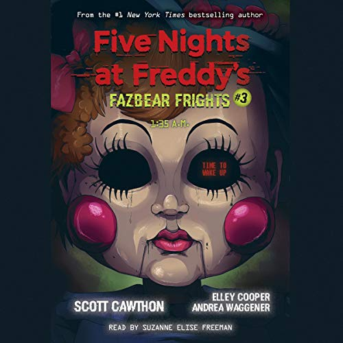

*To Be Beautiful* é a história de Sarah, uma jovem que encontra uma boneca chamada Eleanor. Quando Sarah deseja ser bonita, Eleanor concede seu desejo, mas com consequências terríveis. A história explora os temas de insegurança, superficialidade e o preço de nossos desejos.
